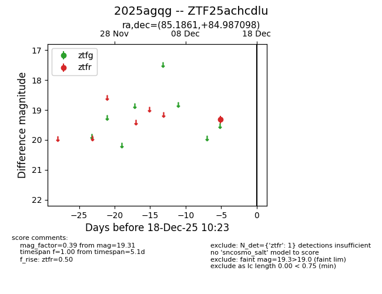
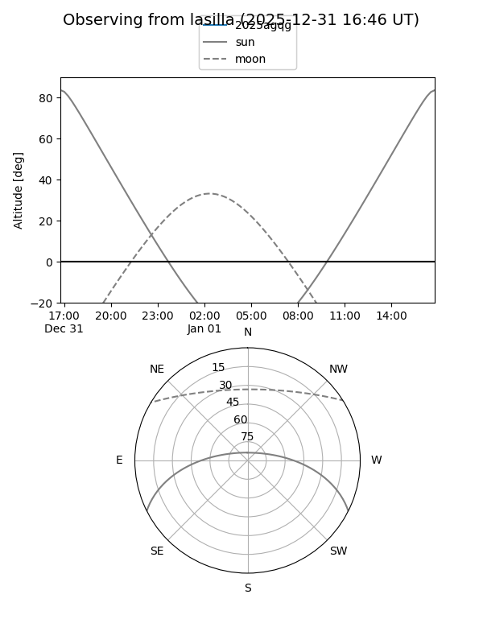
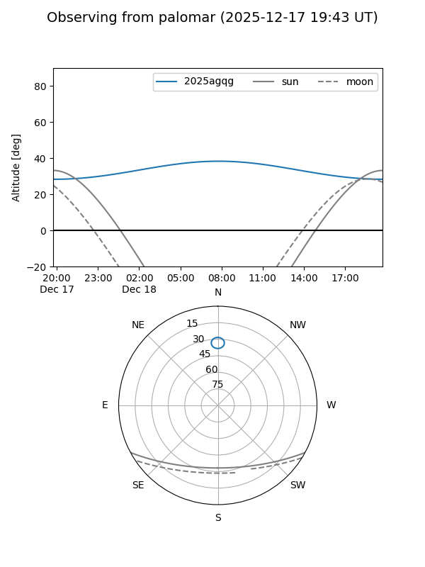

2025agqg
Target 2025agqg at 2025-12-31 18:00
Aliases and brokers:
FINK: link
Lasair: link
ALeRCE: link
TNS: link
YSE: link
alt names
ZTF25achcdlu (ztf,fink_ztf)
2025agqg (tns,yse)
Coordinates:
equatorial (ra, dec) = 85.1861,+84.98710
equatorial (HMS+DMS) = 05:40:44.67,+84:59:13.55
galactic (l, b) = (128.2248,+25.50757)
Flags:
Photometry:
last ztfr=19.31
1 ztfr detections
Lightcurve

Visibility


Additional plots